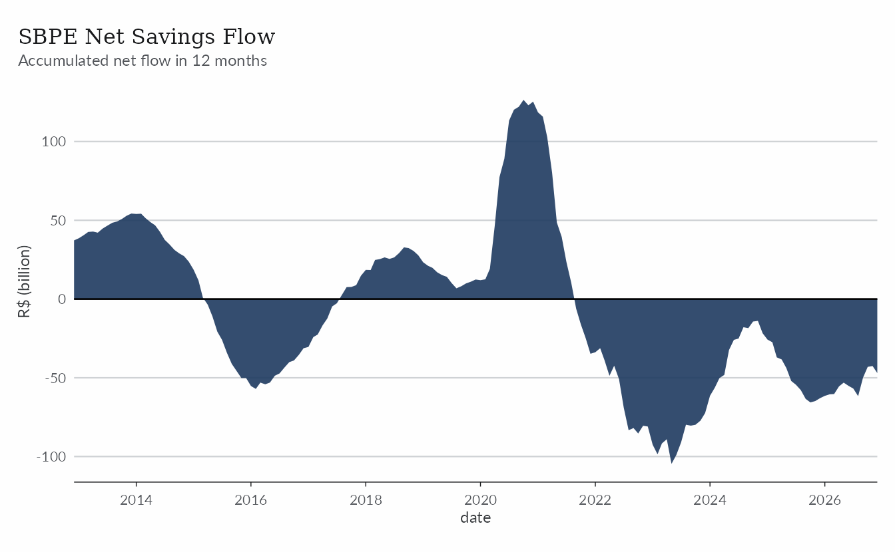
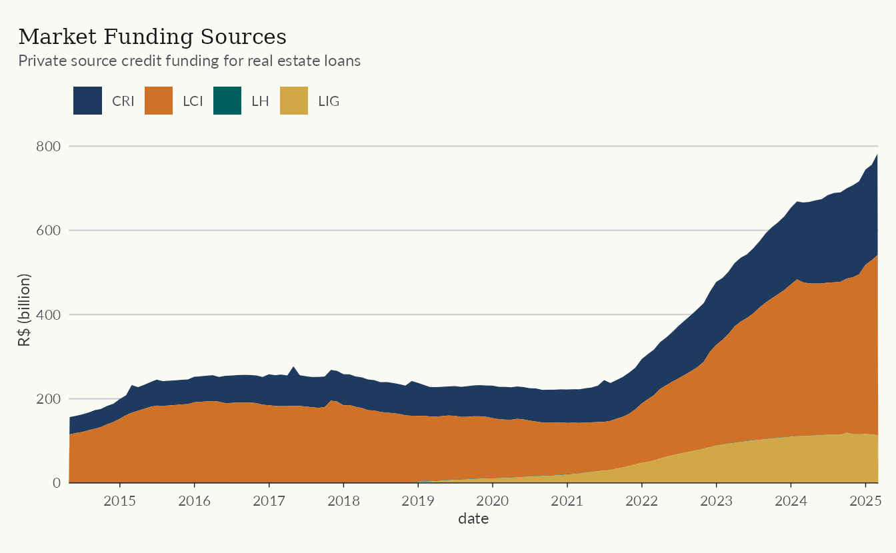
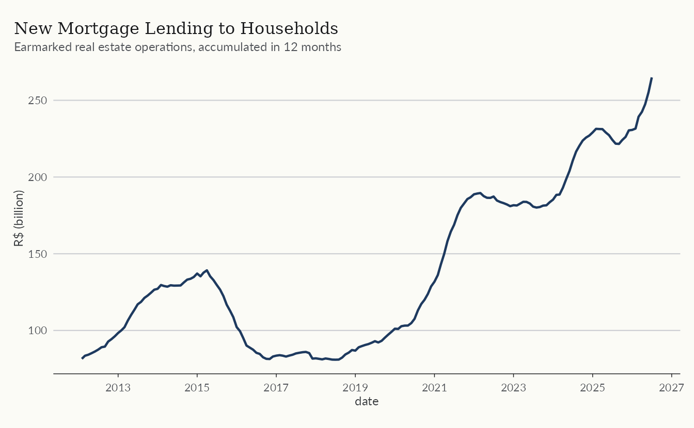
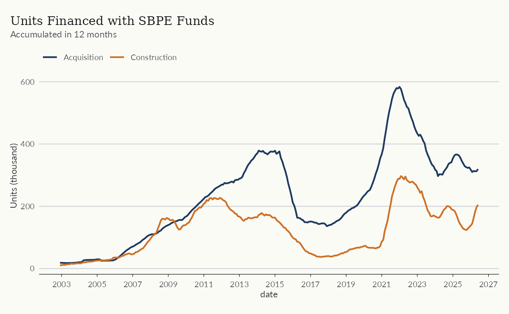
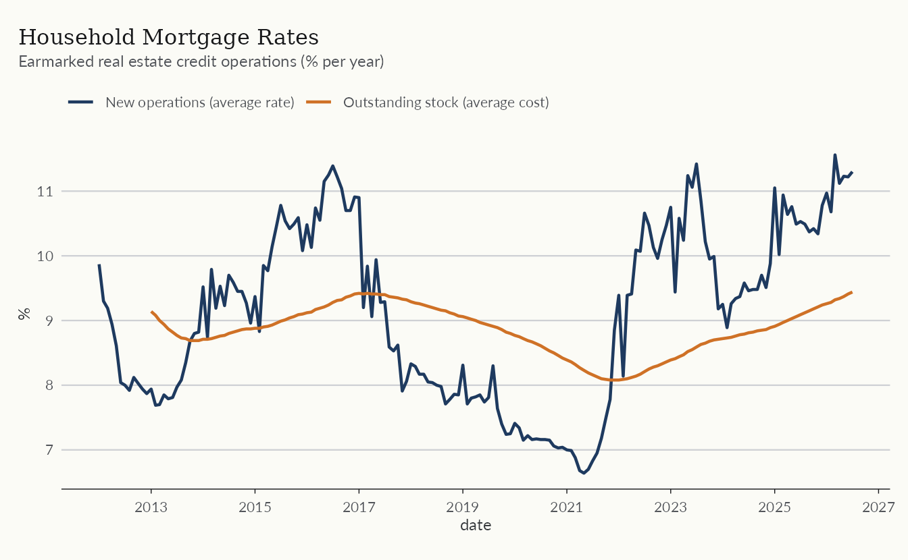
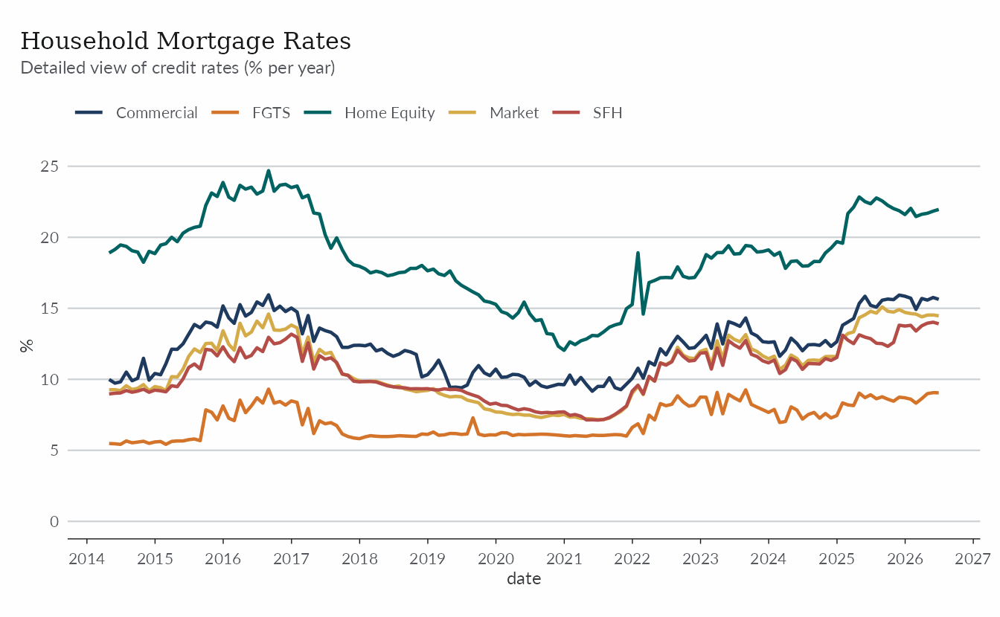
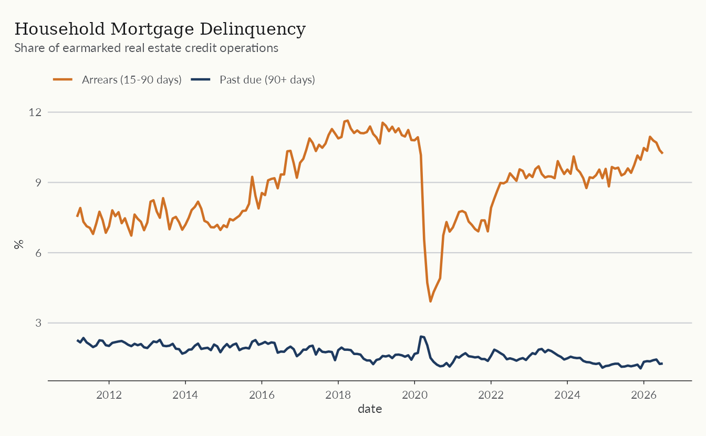
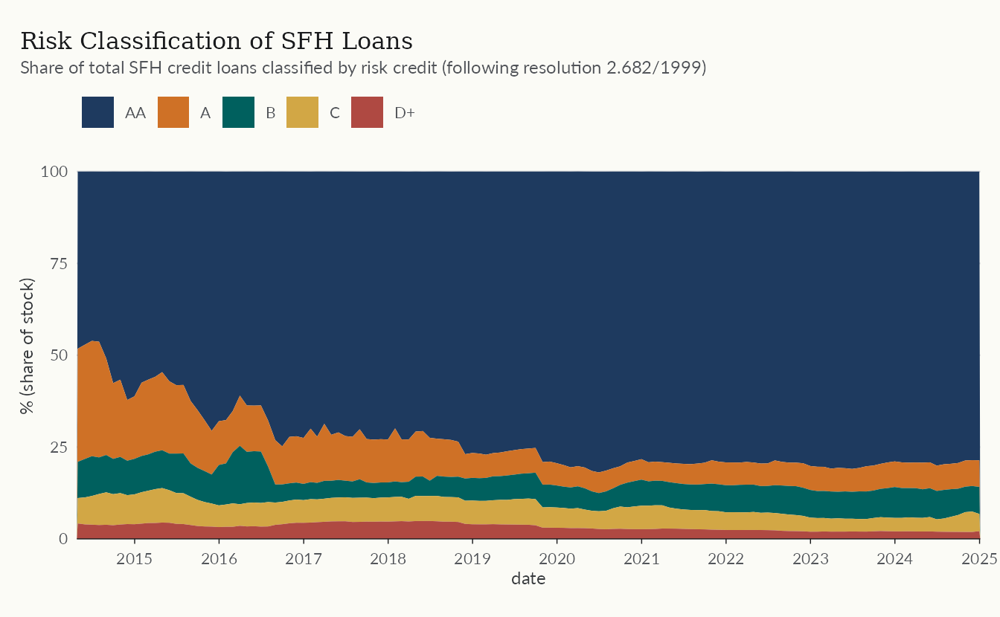
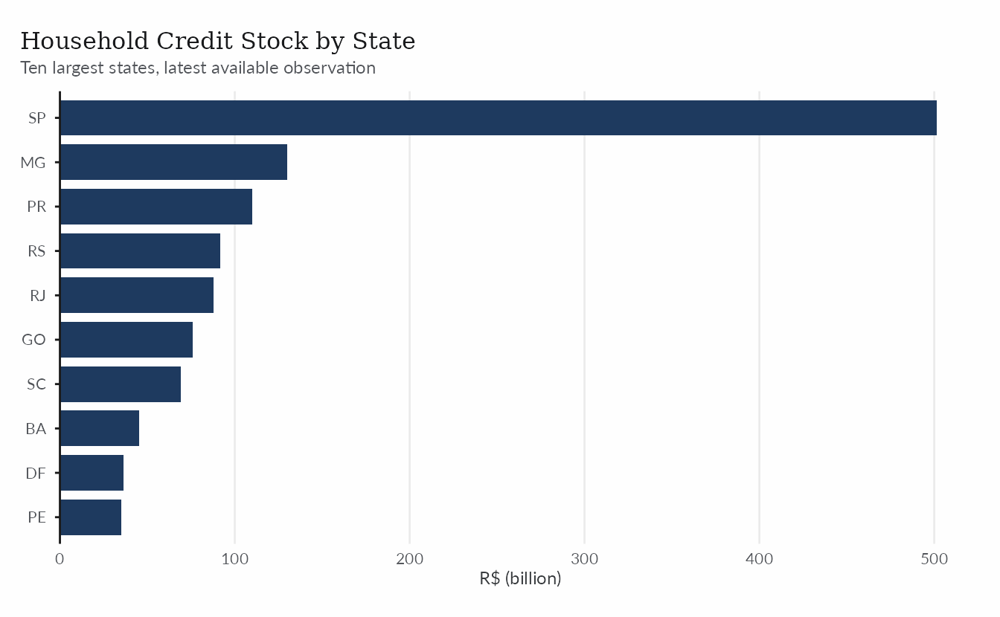
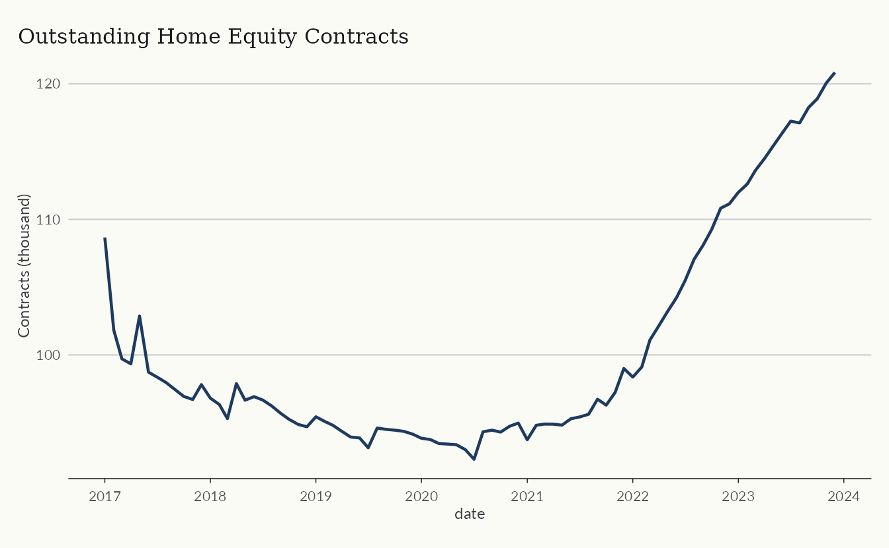

Brazilian housing finance is largely organized around the SFH
(Sistema Financeiro da Habitação), in which mortgages are funded by
savings deposits (SBPE) and by the FGTS workers’ fund. Three datasets
cover this market. abecip, bcb_series, and
bcb_realestate appear below in increasing order of
detail.
| Table name | Source | Description |
|---|---|---|
abecip |
Abecip | Savings flows and financed units by the SBPE system. |
bcb_series |
Brazilian Central Bank (SGS) | Economic time series related to credit and housing credit (e.g. lending volumes, rates, delinquency, etc.). |
bcb_realestate |
Brazilian Central Bank (Estatísticas do Mercado Imobiliário) | A more detailed dataset containing economic time series related to housing credit. |
realestatebr follows its sources closely, so monetary
values come in nominal Brazilian reais with no inflation adjustment.
This holds for all three datasets used here.
The code below defines a common theme for the plots in this article and can be omitted.
library(ekioplot)
color_palette <- ekioplot::ekio_pal()
theme_series <- function() {
ekioplot::theme_ekio(base_size = 10) +
theme(
palette.color.discrete = color_palette
)
}Funding
SBPE savings accounts are an important funding source for mortgages,
so sustained withdrawals eventually constrain new lending. The
sbpe table from abecip tracks monthly
deposits, withdrawals, and the resulting stock.
sbpe <- get_dataset("abecip", table = "sbpe")
glimpse(sbpe)
#> Rows: 540
#> Columns: 15
#> $ date <date> 1982-01-01, 1982-02-01, 1982-03-01, 1982-04-01, 198…
#> $ sbpe_inflow <dbl> 238234.1, 224080.0, 247218.8, 264925.0, 227636.3, 31…
#> $ sbpe_outflow <dbl> 261523.1, 161176.0, 118662.8, 378395.0, 137201.3, 15…
#> $ sbpe_netflow <dbl> -23289, 62904, 128556, -113470, 90435, 164739, -9934…
#> $ sbpe_netflow_pct <dbl> -0.009387130, 0.021881448, 0.043761242, -0.037006429…
#> $ sbpe_yield <dbl> 417103, 0, 0, 485995, 0, 0, 642432, 0, 0, 957944, 0,…
#> $ sbpe_stock <dbl> 2874764, 2937668, 3066224, 3438749, 3529184, 3693923…
#> $ rural_inflow <dbl> NA, NA, NA, NA, NA, NA, NA, NA, NA, NA, NA, NA, NA, …
#> $ rural_outflow <dbl> NA, NA, NA, NA, NA, NA, NA, NA, NA, NA, NA, NA, NA, …
#> $ rural_netflow <dbl> NA, NA, NA, NA, NA, NA, NA, NA, NA, NA, NA, NA, NA, …
#> $ rural_netflow_pct <dbl> NA, NA, NA, NA, NA, NA, NA, NA, NA, NA, NA, NA, NA, …
#> $ rural_yield <dbl> NA, NA, NA, NA, NA, NA, NA, NA, NA, NA, NA, NA, NA, …
#> $ rural_stock <dbl> NA, NA, NA, NA, NA, NA, NA, NA, NA, NA, NA, NA, NA, …
#> $ total_stock <dbl> NA, NA, NA, NA, NA, NA, NA, NA, NA, NA, NA, NA, NA, …
#> $ total_netflow <dbl> NA, NA, NA, NA, NA, NA, NA, NA, NA, NA, NA, NA, NA, …The plot shows the accumulated net flow over twelve months. Periods of persistent outflows, such as the years after 2021, signal tighter funding ahead.
sbpe_flows <- sbpe |>
filter(date >= as.Date("2012-01-01")) |>
mutate(
netflow_12m = zoo::rollsumr(sbpe_netflow, k = 12, fill = NA) / 1e3
)
ggplot(sbpe_flows, aes(date, netflow_12m)) +
geom_area(fill = color_palette[1], alpha = 0.9) +
geom_hline(yintercept = 0) +
scale_x_date(
date_breaks = "2 year",
date_labels = "%Y",
expand = expansion(mult = c(0))
) +
labs(
title = "SBPE Net Savings Flow",
subtitle = "Accumulated net flow in 12 months",
y = "R$ (billion)"
) +
theme_series()
The rest of the funding market shows up in
bcb_realestate. That dataset takes some time to learn,
since a chain of v1 to v5 components
identifies each series, but the query below stays short. It returns
total credit funding from private sources for real estate loans in
Brazil.
bcb_re <- get_dataset("bcb_realestate")
bcb_funding <- bcb_re |>
filter(category == "fontes", v1 == "br") |>
mutate(funding_source = factor(type), value_bln = value / 1e9)
ggplot(bcb_funding, aes(date, value_bln)) +
geom_area(aes(fill = funding_source)) +
scale_fill_manual(values = color_palette, labels = \(x) toupper(x)) +
scale_x_date(
date_breaks = "1 year",
date_labels = "%Y",
expand = expansion(mult = c(0))
) +
scale_y_continuous(expand = expansion(c(0, 0.05))) +
labs(
title = "Market Funding Sources",
subtitle = "Private source credit funding for real estate loans",
y = "R$ (billion)",
fill = NULL
) +
theme_series()
Lending
The Central Bank reports the flow of new real estate loans to
households. That series sits in the core table of
bcb_series, which gathers the most relevant real estate
credit series. We filter on name_simplified here, but the
dataset also carries code_bcb, which matches the original
SGS codes.
bcb <- get_dataset("bcb_series", table = "core")
fimob <- bcb |>
filter(name_simplified == "fimob_pf_total") |>
mutate(
lending_12m = zoo::rollsumr(value, k = 12, fill = NA) / 1e3
)As mentioned above, these values are nominal (i.e. not adjusted for inflation).
ggplot(filter(fimob, !is.na(lending_12m)), aes(date, lending_12m)) +
geom_line(color = color_palette[1], lwd = 0.8) +
scale_x_date(date_breaks = "2 years", date_labels = "%Y") +
labs(
title = "New Mortgage Lending to Households",
subtitle = "Earmarked real estate operations, accumulated in 12 months",
y = "R$ (billion)"
) +
theme_series()
In physical terms, the units table from
abecip counts how many homes were financed with SBPE funds,
split between construction and acquisition loans.
units <- get_dataset("abecip", table = "units")
units_12m <- units |>
select(date, units_construction, units_acquisition) |>
tidyr::pivot_longer(-date, names_to = "type", values_to = "units") |>
mutate(
units_12m = zoo::rollsumr(units, k = 12, fill = NA) / 1e3,
type_label = if_else(
type == "units_construction",
"Construction",
"Acquisition"
),
.by = type
)
ggplot(filter(units_12m, !is.na(units_12m)), aes(date, units_12m)) +
geom_line(aes(color = type_label), lwd = 0.8) +
scale_color_manual(values = color_palette[c(1, 2)]) +
scale_x_date(date_breaks = "2 years", date_labels = "%Y") +
labs(
title = "Units Financed with SBPE Funds",
subtitle = "Accumulated in 12 months",
y = "Units (thousand)",
color = NULL
) +
theme_series()
The price of credit
Mortgage rates move with monetary policy but are partly insulated by
regulated pricing within the SFH. The core table includes
both the average rate charged on new operations and the average cost of
the outstanding stock, which adjusts much more slowly.
rates <- bcb |>
filter(name_simplified %in% c("taxa_fimob_pf_total", "icc_fimob")) |>
mutate(
rate_label = if_else(
name_simplified == "icc_fimob",
"Outstanding stock (average cost)",
"New operations (average rate)"
)
)
rates_recent <- filter(rates, date >= as.Date("2012-01-01"))
ggplot(rates_recent, aes(date, value)) +
geom_line(aes(color = rate_label), lwd = 0.8) +
scale_color_manual(values = color_palette[c(1, 2)]) +
scale_x_date(date_breaks = "2 years", date_labels = "%Y") +
labs(
title = "Household Mortgage Rates",
subtitle = "Earmarked real estate credit operations (% per year)",
y = "%",
color = NULL
) +
theme_series()
For a more detailed view of credit rates, we turn to
bcb_realestate. The code below finds the rates for all
credit lines at the national (BR) level. In these series
pf stands for pessoa física (private
individual) and pj for pessoa jurídica
(company).
credit_rates <- bcb_re |>
filter(
category == "credito",
v1 == "taxa",
# only for families/individuals (i.e. pessoa física)
v2 == "pf",
# weighted average for Brazil
abbrev_state == "BR"
) |>
mutate(
credit_label = dplyr::recode(
v3,
comercial = "Commercial",
fgts = "FGTS",
`home-equity` = "Home Equity",
livre = "Market",
sfh = "SFH"
)
)The plot shows the average rate applied across each credit line, making the size of the spread clear.
ggplot(credit_rates, aes(date, value)) +
geom_line(aes(color = credit_label), lwd = 0.8) +
scale_x_date(date_breaks = "1 year", date_labels = "%Y") +
scale_y_continuous(limits = c(0, NA)) +
labs(
title = "Household Mortgage Rates",
subtitle = "Detailed view of credit rates (% per year)",
y = "%",
color = NULL
) +
theme_series()
Credit risk
Delinquency in housing credit is typically low because loans are collateralized, although borrowers can still fall behind when economic conditions deteriorate.
risk <- bcb |>
filter(
name_simplified %in%
c(
"inad_credito_direcionado_pf_fimob",
"atraso_fimob_pf_total"
)
) |>
mutate(
risk_label = if_else(
name_simplified == "atraso_fimob_pf_total",
"Arrears (15-90 days)",
"Past due (90+ days)"
)
)
ggplot(risk, aes(date, value)) +
geom_line(aes(color = risk_label), lwd = 0.8) +
scale_color_manual(values = color_palette[c(2, 1)]) +
scale_x_date(date_breaks = "2 years", date_labels = "%Y") +
labs(
title = "Household Mortgage Delinquency",
subtitle = "Share of earmarked real estate credit operations",
y = "%",
color = NULL
) +
theme_series()
Once again, for a more detailed view we use
bcb_realestate. The code below finds the risk
classification of the stock of SFH loans.
sfh_risk_stock <- bcb_re |>
filter(
category == "credito",
type == "estoque",
v1 == "risco-operacao",
# only for families/individuals (i.e. pessoa física)
v2 == "pf",
v3 == "sfh",
v5 == "br"
) |>
mutate(
credit_risk = factor(
v4,
levels = c("aa", "a", "b", "c", "d-mais"),
labels = c("AA", "A", "B", "C", "D+")
)
)
ggplot(sfh_risk_stock, aes(date, value)) +
geom_area(aes(fill = credit_risk)) +
scale_fill_manual(values = color_palette) +
scale_x_date(
date_breaks = "1 year",
date_labels = "%Y",
expand = expansion(mult = c(0))
) +
scale_y_continuous(expand = expansion(c(0, 0.05))) +
labs(
title = "Risk Classification of SFH Loans",
subtitle = "Share of total SFH credit loans classified by risk credit (following resolution 2.682/1999)",
y = "% (share of stock)",
fill = NULL
) +
theme_series()
Where the credit is
The bcb_realestate dataset has regional data by state.
The code below sums the household credit portfolio across credit lines
for each state’s latest available month.
stock_states <- bcb_re |>
filter(
category == "credito",
type == "estoque",
v1 == "carteira",
v2 == "credito",
v3 == "pf",
abbrev_state != "BR"
) |>
filter(date == max(date), .by = abbrev_state) |>
summarise(stock = sum(value) / 1e9, .by = abbrev_state) |>
slice_max(stock, n = 10)
ggplot(stock_states, aes(stock, reorder(abbrev_state, stock))) +
geom_col(fill = color_palette[1], width = 0.8) +
scale_x_continuous(expand = expansion(c(0, 0.05))) +
labs(
title = "Household Credit Stock by State",
subtitle = "Ten largest states, latest available observation",
y = NULL,
x = "R$ (billion)"
) +
theme_series() +
theme(
panel.grid.major.x = element_line(),
panel.grid.major.y = element_blank(),
axis.line.x = element_blank(),
axis.ticks.x = element_blank(),
axis.title.x = element_text(),
axis.line.y = element_line(color = "gray10", linewidth = 0.5),
axis.ticks.y = element_line(color = "gray10", linewidth = 0.5)
)
Home equity lending
Home equity loans (CGI, Crédito com Garantia de Imóvel) remain a
small but growing market. The cgi table from
abecip summarizes contracts, balances, and default
rates.
cgi <- get_dataset("abecip", table = "cgi")
glimpse(cgi)
#> Rows: 84
#> Columns: 8
#> $ year <dbl> 2017, 2017, 2017, 2017, 2017, 2017, 2017, 2017, 20…
#> $ date <date> 2017-01-01, 2017-02-01, 2017-03-01, 2017-04-01, 2…
#> $ new_contracts <dbl> 1323, 1197, 1324, 809, 926, 982, 928, 905, 781, 80…
#> $ stock_contracts <dbl> 108661, 101825, 99712, 99340, 102869, 98730, 98359…
#> $ loan <dbl> 181295778, 157080758, 195053012, 132217320, 174307…
#> $ outstanding_balance <dbl> 12725110368, 11120992240, 10598834209, 10514921327…
#> $ average_term <dbl> 144.8, 145.3, 140.8, 130.2, 134.3, 128.7, 137.4, 1…
#> $ default_rate <dbl> 4.8, 5.0, 4.9, 5.2, 4.7, 4.4, 5.0, 4.7, 4.6, 4.7, …
ggplot(cgi, aes(date, stock_contracts / 1e3)) +
geom_line(color = color_palette[1], lwd = 0.8) +
scale_x_date(date_breaks = "1 year", date_labels = "%Y") +
labs(
title = "Outstanding Home Equity Contracts",
y = "Contracts (thousand)"
) +
theme_series()
Learn more
The help topics ?abecip, ?bcb_series, and
?bcb_realestate document the columns of each dataset used
here. For the primary market, see The
Primary Market and the Construction Cycle; for price indices, see Working with Property Price
Indices.